Computational studies and engineering systems, with methods, results, evaluation settings, and limitations in each case study.
Project portfolio
16 projects
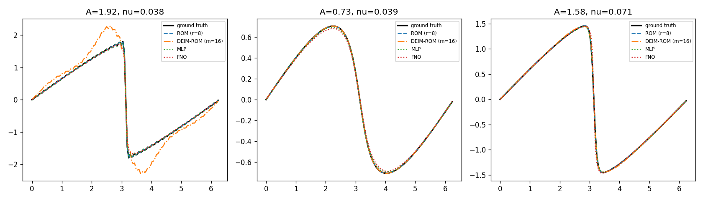
Research figure · open case study for contextScientific ML · Model reduction
Reduced models & neural operators
Research implementation
Comparing fast approximations of nonlinear transport.
ROM error: 0.152% in-distribution; 1.7% on the tested unseen initial-condition family.
Read case study →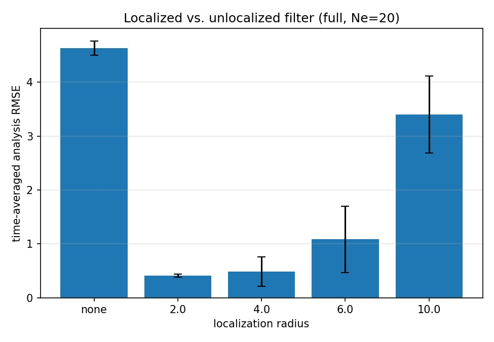
Research figure · open case study for contextDynamical systems · Uncertainty
Data assimilation for chaotic Lorenz-96
Research implementation
Estimating chaotic system states from noisy observations.
Over 11× RMSE reduction at the best tested localisation radius, relative to the unlocalised baseline.
Read case study → Research figure · open case study for context
Research figure · open case study for contextM.Sc. thesis · Applied mathematics
Optimal mixing of passive scalars
2021 thesis · numerical report updated in 2026
Understanding how stirring accelerates scalar mixing.
Exponential mixing in the tested cases, with resolution-dependent fitted decay rates.
Read case study →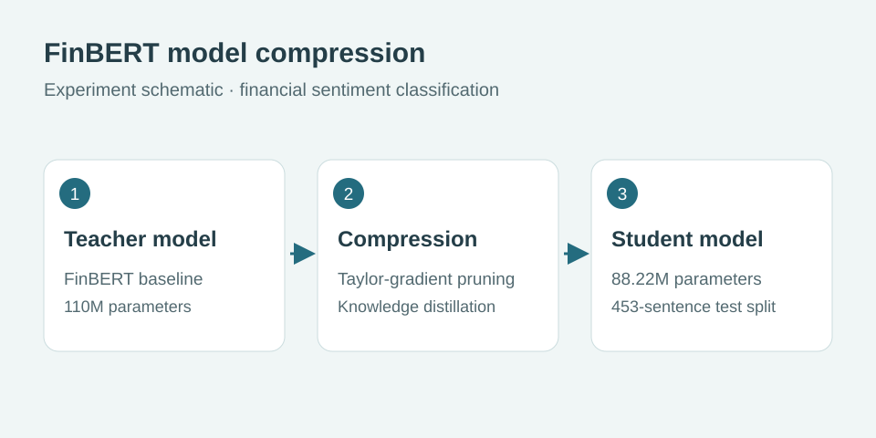
Compression experiment schematicApplied ML · Generative AI
LLM systems & model compression
Applied ML collection
Building and evaluating practical language-model systems.
FinBERT student: 96.91% accuracy and 0.9691 weighted F1 on a 453-sentence test split.
Read case study →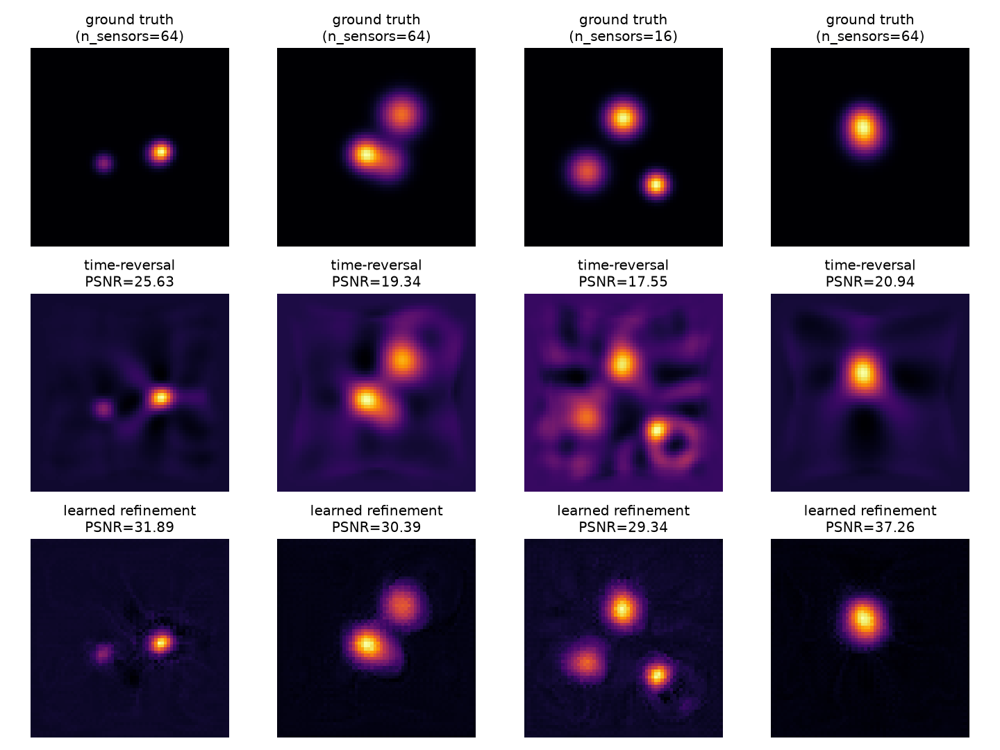
Research figure · open case study for contextInverse problems · Imaging
Sparse-view photoacoustic reconstruction
Research implementation
Reconstructing images from sparse acoustic measurements.
+11.8 dB PSNR at 16 sensors; whole-image SSIM is lower despite improved foreground structure.
Read case study → Research figure · open case study for context
Research figure · open case study for contextInverse rendering
Differentiable material recovery
Research implementation
Recovering surface materials from multiple images.
Held-out-view MSE: 1.02×10⁻⁵, approximately 5.6× the training-view error.
Read case study →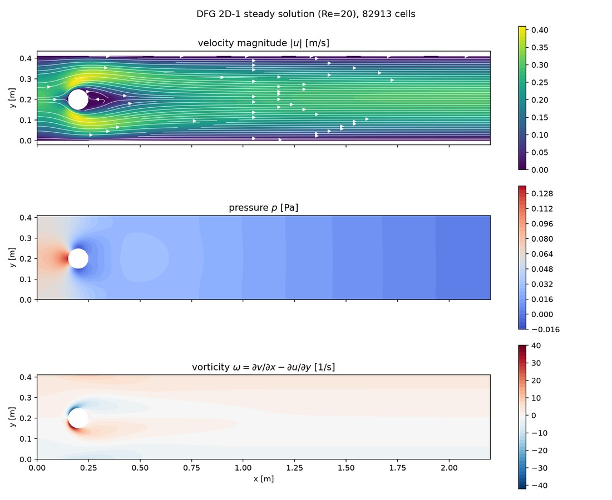
Research figure · open case study for contextCFD · Finite elements
Finite-element cylinder-flow benchmarks
Research implementation · validation limitations documented
Measuring solver accuracy on standard cylinder-flow problems.
Verified O(h³)/O(h²) velocity convergence; complete unsteady benchmark reproduction is not claimed.
Read case study →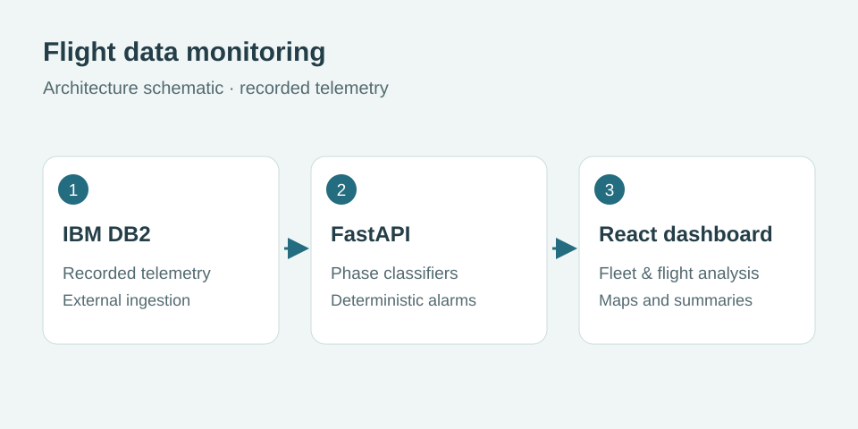
System schematicIndustry · Aviation analytics
Flight data monitoring dashboard
Industry work · retrospective evaluation
Helping analysts explore recorded flights and flight phases.
0.999 weighted F1 in five-fold row-level cross-validation; flight-, aircraft-, and time-held-out evaluation not established.
Read case study → Research figure · open case study for context
Research figure · open case study for contextFinite elements · Optimisation
Topology optimisation with verified FEM
Research implementation · validation limitations documented
Finding material layouts that resist loading with less material.
Cantilever compliance: 617.9 → 101.4 after 150 iterations; the mesh study is not yet quantitatively converged.
Read case study → Research figure · open case study for context
Research figure · open case study for contextCFD · Reduced-order modelling
Navier–Stokes & reduced-order modelling
Research implementation
Accelerating repeated simulations of incompressible flow.
38.5× online speed-up at <0.1% mean state error on the training trajectory (rank 16).
Read case study →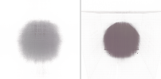
Novel-view rendering comparisonNeural rendering
NeRF & TensoRF from scratch
Research implementation
Synthesising new views of a scene from photographs.
TensoRF: 16.7 dB test PSNR versus 13.7 dB for NeRF, using half the training iterations.
Read case study →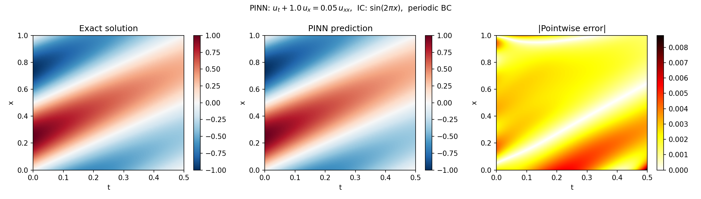
Historical value-only formulation · seed 42Scientific ML · Numerical PDEs
Physics-informed advection–diffusion
Research implementation
Solving transport equations using physics-based training losses.
Derivative mismatch fell 7–38×; global solution accuracy did not improve reliably.
Read case study →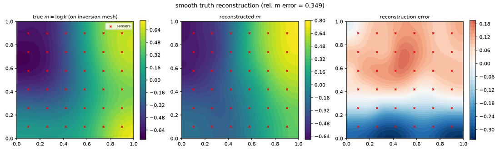
Research figure · open case study for contextInverse problems · Uncertainty
Bayesian Darcy permeability inversion
Research implementation · validation limitations documented
Recovering underground permeability from pressure observations.
0.59% sampler validation error on a linear-Gaussian reference; full PDE posterior mixing remains limited.
Read case study →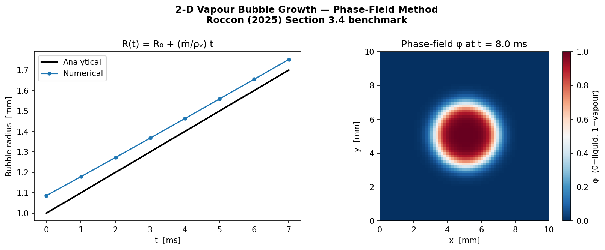
Research figure · open case study for contextCFD · Phase change
Phase-field multiphase flow
Research implementation · validation limitations documented
Simulating coupled flow, heat transfer, and phase change.
0.079% interface-position error in the dedicated 1D Stefan test; physical 3D validation is pending.
Read case study → Training and model-selection curves
Training and model-selection curvesMedical imaging
3D liver segmentation
Research implementation · validation limitations documented
Segmenting liver anatomy in volumetric CT images.
Dice 0.9886 on centre-cropped model-selection volumes; independent full-volume evaluation is pending.
Read case study →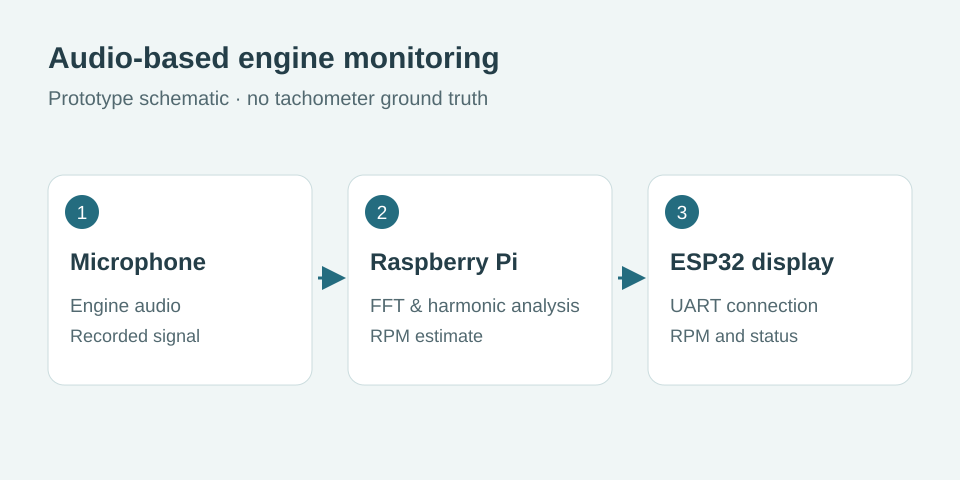
System schematicPersonal prototype · Signal processing
Aircraft engine audio monitoring
Personal prototype
Estimating engine behaviour from audio recordings.
Prototype tested on Tecnam P92 recordings; no tachometer ground truth and ~21% chunk-level order ambiguity.
Read case study →Additional Technical Work
- Image Inpainting (TV Regularisation): Douglas-Rachford optimisation for variational image restoration.
- Image Denoising (ResNet): Residual Channel Attention Blocks for blind greyscale denoising, 33.71 dB PSNR / 0.918 SSIM on LFW.
- Roof Segmentation (U-Net): aerial image segmentation for rooftop detection from satellite imagery.
- Multi-Label Image Classification: EfficientNet-B3 on Pascal VOC 2012 with mixed-precision training and OneCycleLR scheduling.
- Dipole Subsurface Scattering: differentiable dipole BSSRDF parameterised for all six Fitzpatrick skin types.
- nano-gpt: a GPT-style transformer language model built from scratch in PyTorch, trained character-level on Tiny Shakespeare.
- Whole-Body Diffusion Generator: IP-Adapter FaceID and SDXL face-guided portrait generation on serverless GPU, a 2026 modernisation of the InsetGAN pipeline built during the Fellowship.AI internship.
- Prediction API: FastAPI + PostgreSQL model-serving deployment with Docker Compose, Terraform (AWS), and a CI/CD pipeline.
- Vending Machine Failure Prediction: predictive ML on telemetry and transaction logs across roughly 150 machines.